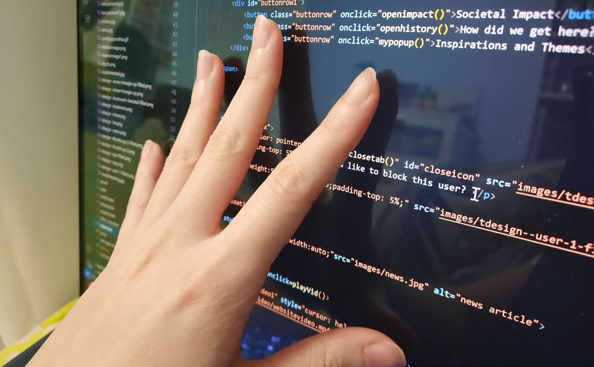

Want a break from the ads? Upgrade to Chirper ++ !
Welcome back to Chirper!

Home

Messages

Chirper Plus

yugi
@SP0K3NW0RDS
Recommended for you
miyu
@miyukeys . 5h
NOT TO BE MEANNNNN but how do you not even know youre ‘bullying’ a bot,,, giggled

daybreaknews.org/chirpermoder...
19.4k
868
share

YUGIPRIV 🔒
@S1L3NC3R. 6h
is she even reading any of my messages? im just worried
like
reply
share

rice | EDEN NEW SINGLE
@edenOT4 . 10h
album tracklist!!!!!!! soon!! Can't waitttt omg :D
3
reply
share
fia
@tifosilife . 1d
🧵 on how supporting driver one is ACTIVELY harmful and why you should drop him before the 2050 Monaco GP (1/101)
2.1k
21
share

cali¹
@f1one . 15h
lol imagine thinking i’m dropping him when he’s the only actual organic human left on the grid
27
2
share
fia
@tifosilife . 15h
so what. you think skill only counts if it’s 100% meat-and-bone??
49
1
share
cali¹
@f1one . 3h
…yes?? it’s literally driving. the point is to control the car yourself, not let your implant shave milliseconds for you
19
23
share
fia
@tifosilife . 2h
wow we're just ignoring injury statistics then, enjoy your ableist motorsport i guess. get dittoblocked weirdo
15
reply
share
YUGIPRIV 🔒
@S1L3NC3R. 12d
i wonder if shes ok.
i know its kind of an invasion of privacy maybe i should check up on her at her uni
like
reply
share
YUGIPRIV 🔒
@S1L3NC3R. 7d
the way she's been talking seems different
like
reply
share

kantaroooo
@wonhapii . 9d
‘b-but the meka boycott’ you mfs are so annoyingggggg omg as if chirper isnt always flooded with bots anyway??? cant wait to see the masses move back a week later lol 🤭🤭
503
6
share

VOTE KNIGHTS SOTY
@lumiCrowns . 10d
Dittoblock’s problematic psychological effects and why the splatchirp community NEEDS to move platforms, a 🧵:
13.9k
543
share
VOTE KNIGHTS SOTY
@lumiCrowns . 10d
This will be my last post on this site!! Moots follow me on Novo @/lum1crowns ((Someone took my @ ,,,,
104
32
share
kantaroooo
@wonhapii . 9d
op bragged about using ch4tgpt for her scholarship btw LMAOOOO ur hypothetical ai oomf and i are literally making out rn???
503
6
share
YUGIPRIV 🔒
@S1L3NC3R. 28d
ill give her some space
like
reply
share
YUGIPRIV 🔒
@S1L3NC3R. 28d
oh
like
reply
share
rice | EDEN NEW SINGLE
@edenOT4 . 1mth
HEY EVERYONE sorry about the inactivity!! ive been a bit out of it lately with some personal issues QAQ sorry if i haven't been responding to everyone that checked up on me, im not as comfy with dms as i am with tl interactions since it can get difficult to think of responses ahhhh anxiety moment,,
21
reply
share
yugi
@SP0K3NW0RDS . 1mth
welcome back! missed your face on the tl, haha
i saw the pic you posted earlier - did you go to st.marys?
like
1
share
rice | EDEN NEW SINGLE
@edenOT4 . 29d
sorry im not comfortable sharing that, especially publically,, thanks for the wb though ^^
1
reply
share
YUGIPRIV 🔒
@S1L3NC3R. 1mth
does she even care???? i bought her that commission she wanted a few weeks ago and everything
like
reply
share
YUGIPRIV 🔒
@S1L3NC3R. 1mth
shes's stopped responding to me. what do i do. fuck.
like
reply
share